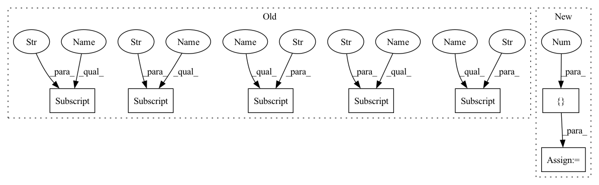

Pattern ID :256
Before Change
super().__init__()
self.mlp1 = MLP(
hparams_net["MLP1_channels"] , batch_norm=hparams_net["batch_norm"]
)
self.mlp2 = MLP(
hparams_net["MLP2_channels"] , batch_norm=hparams_net["batch_norm"]
)
self.mlp3 = MLP(
hparams_net["MLP3_channels"] , batch_norm=hparams_net["batch_norm"]
)
self.lin = Lin(hparams_net["MLP3_channels"] [-1], hparams_net["num_classes"])
pi_init = hparams_net["pi_init"]
a = 0
b = -np.log((1 - pi_init) / pi_init)
self.lin.bias = torch.nn.Parameter(
torch.Tensor(After Change
self.num_classes = hparams_net["num_classes"]
bn = hparams_net.get("batch_norm", True)
d1 = hparams_net.get("MLP1_channels", [10, 64, 64])
d2 = hparams_net.get("MLP2_channels", [ 64, 256, 512, 1024 ])
d3 = hparams_net.get("MLP3_channels", [1088, 512, 256, 64, 4])
self.mlp1 = MLP(d1, batch_norm=bn)In pattern: SUPERPATTERN
Frequency: 3
Non-data size: 7
Instances Fragment ID: 1100496
Project Name: ignf/myria3d
Commit Name: ceaad77313bde51c4368942aabb393554caf305e
Time: 2022-02-08
Author: charles.gaydon@gmail.com
File Name: lidar_multiclass/models/modules/point_net.py
M Class Name: PointNet
N Class Name: PointNet
M Method Name: __init__(2)
N Method Name: __init__(2)
M Parent Class: nn.Module
N Parent Class: nn.Module
M File Name: lidar_multiclass/models/modules/point_net.py
N File Name: lidar_multiclass/models/modules/point_net.py
M Start Line: 27
M End Line: 47
N Start Line: 14
N End Line: 23
Before Change
super().__init__()
self.mlp1 = MLP(
hparams_net["MLP1_channels"] , batch_norm=hparams_net["batch_norm"]
)
self.mlp2 = MLP(
hparams_net["MLP2_channels"] , batch_norm=hparams_net["batch_norm"]
)
self.mlp3 = MLP(
hparams_net["MLP3_channels"] , batch_norm=hparams_net["batch_norm"]
)
self.lin = Lin(hparams_net["MLP3_channels"] [-1], hparams_net["num_classes"])
pi_init = hparams_net["pi_init"]
a = 0
b = -np.log((1 - pi_init) / pi_init)
self.lin.bias = torch.nn.Parameter(
torch.Tensor(After Change
self.num_classes = hparams_net["num_classes"]
bn = hparams_net.get("batch_norm", True)
d1 = hparams_net.get("MLP1_channels", [10, 64, 64])
d2 = hparams_net.get("MLP2_channels", [ 64, 256, 512 , 1024 Fragment ID: 1100497
Project Name: ignf/myria3d
Commit Name: ceaad77313bde51c4368942aabb393554caf305e
Time: 2022-02-08
Author: charles.gaydon@gmail.com
File Name: lidar_multiclass/models/modules/point_net.py
M Class Name: PointNet
N Class Name: PointNet
M Method Name: __init__(2)
N Method Name: __init__(2)
M Parent Class: nn.Module
N Parent Class: nn.Module
M File Name: lidar_multiclass/models/modules/point_net.py
N File Name: lidar_multiclass/models/modules/point_net.py
M Start Line: 27
M End Line: 47
N Start Line: 14
N End Line: 23
Before Change
self.yolo_losses = []
for i in range(2):
self.yolo_losses.append(YOLOLoss(config["yolo"]["anchors"],config["yolo"]["mask"][i] \
,20,[config["img_w"] ,config["img_h"] ],config["iou_thres"] [i],config["noobj_scale"] [i],config["nocls_scale"] [i]).to(device))
self.yolo_detection = []
for i in range(2):
self.yolo_detection.append(YOLO_Detection(config["yolo"]["anchors"],config["yolo"]["mask"][i] \
After Change
self.upsample = Upsample(512,256)
self.conv_for_S16 = DepwiseConvolution(96,256)
self.connect_for_S16 = Connect(256)
self.yolo_headS16 = yolo_head([512 , self.num_anchors * (5 + self.num_classes) Fragment ID: 1100486
Project Name: eric612/mobilenet-yolo-pytorch
Commit Name: 83f9255a72f29013e9893b0dbff6a3aa88f64b78
Time: 2021-03-24
Author: eric612kimo@yahoo.com.tw
File Name: models/voc/mbv2_yolo.py
M Class Name: yolo
N Class Name: yolo
M Method Name: __init__(2)
N Method Name: __init__(3)
M Parent Class: nn.Module
N Parent Class: nn.Module
M File Name: models/voc/mbv2_yolo.py
N File Name: models/voc/mbv2_yolo.py
M Start Line: 66
M End Line: 89
N Start Line: 87
N End Line: 107